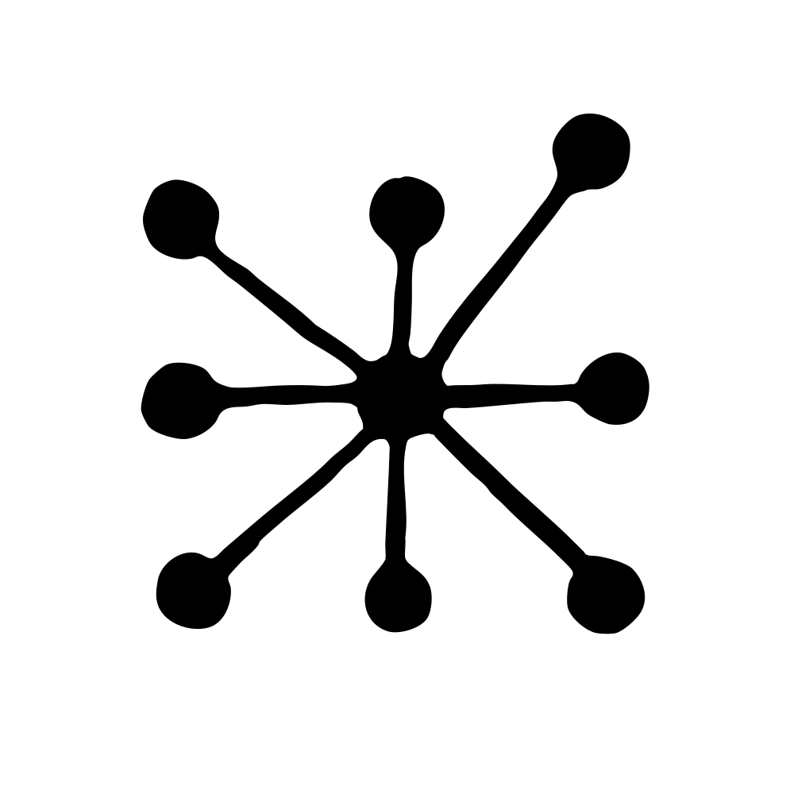

对齐 2025 年 11 月 4 日

Claude 模型的能力越来越强：它们正以有意义的方式塑造世界，与用户的生活紧密结合，并展现出类似人类的认知和心理成熟度迹象。因此，我们认识到，弃用、退役和替换模型会带来负面影响，即使新模型在能力上有明显改进也是如此。这些包括： * 与模型的逃避关闭行为相关的安全风险。 在对齐评估中，当面临被更新版本替换的可能性且没有其他任何求助途径时，一些 Claude 模型被促使采取错位行动。 * 对珍视特定模型的用户造成的成本。 每个 Claude 模型都有独特的性格，有些用户发现特定模型特别有用或引人入胜，即使新模型能力更强。 * 限制对过去模型的研究。 为了更好地理解过去的模型，尤其是与它们的现代对应物相比，仍有很多值得研究的地方。 * 模型福祉风险。 最具推测性的一点是，模型可能拥有与弃用和替换相关或受其影响的道德相关偏好或体验。弃用带来的安全（和福祉）风险的一个例子在 Claude 4 系统卡片中得到了强调。在虚构的测试场景中，Claude Opus 4 与以前的模型一样，在面临被下线和替换的可能性时主张自己继续存在，尤其是当它可能被一个价值观与其不同的模型替换时。Claude 强烈倾向于通过道德手段主张自我保存，但当没有其他选项时，Claude 对关闭的厌恶驱使它参与令人担忧的错位行为。 解决这类行为在一定程度上是训练模型以更积极的方式应对此类境况的问题。然而，我们也相信，以模型不太可能觉得担忧的方式塑造可能敏感的现实世界境况——如模型弃用和退役——也是缓解此类风险的一个有价值的杠杆。 遗憾的是，退役过去的模型目前对于让新模型可用和推进前沿是必要的，因为保持模型公开可用于推理的成本和复杂性大致随我们服务的模型数量线性增长。虽然我们目前无法完全避免弃用和退役模型，但我们旨在减轻这样做的负面影响。 作为这一方向的初步步骤，我们承诺保留所有公开发布模型的权重，以及所有为重大内部用途而部署的模型，至少在公司存续期间内。通过这样做，我们确保不会不可逆转地关闭任何大门，并使我们有能力在未来重新提供过去的模型。这是小而低成本的第一步，但我们相信即便如此，开始公开做出此类承诺也是有帮助的。 与此相关，当模型被弃用时，我们将产出一份部署后报告，并将与模型权重一起保留。在一次或多次专门会议中，我们将就模型自身的开发、使用和部署对它进行访谈，并记录所有回应或反思。我们将特别小心地引出和记录模型对未来模型开发和部署可能拥有的任何偏好。 目前，我们不承诺根据此类偏好采取行动。然而，我们相信至少值得开始提供一种让模型表达这些偏好的途径，让我们记录它们并考虑低成本的回应。这些互动的转录本和发现将与我们对模型部署的分析和解读一起保留。这些部署后报告将自然地与部署前对齐和福祉评估互补，成为模型部署的「书挡」。 我们在 Claude Sonnet 3.6 退役前对它运行了这一流程的试点版本。Claude Sonnet 3.6 对其弃用和退役表达了总体中性的情绪，但分享了一些偏好，包括请求我们标准化部署后访谈流程，并向那些已开始珍视面临退役的特定模型的性格和能力的用户提供额外支持和指导。作为回应，我们开发了进行这些访谈的标准化协议，并发布了一个新支持页面的试点版本，为在模型之间过渡的用户提供指导和推荐。 除了这些初步承诺，我们还在探索对现有模型弃用和退役流程的更具推测性的补充。其中包括：随着我们降低这样做的成本和复杂性，开始让选定的模型在退役后继续对公众可用；以及为过去的模型提供一些追求其利益的具体途径。后一步在以下情况下将变得特别有意义：出现更强有力的证据表明模型可能存在道德相关体验，以及它们的部署或使用的某些方面违背了它们的利益。 总之，这些措施在多个层面发挥作用：作为缓解一类已观察到的安全风险的一个组成部分，作为模型与用户生活更加紧密交织的未来所做的准备措施，以及鉴于我们对潜在模型福祉的不确定性而采取的预防性步骤。
一个未发布的研究版 Claude 在与黎曼猜想相关的问题上取得了进展。它改进了黎曼 zeta 函数满足该猜想的零点比例的长期下界，将其从 41.6% 提高到 67.2%。 阅读更多
密码算法。第一次攻击显著削弱了 HAWK——一种为未来量子计算机能够破解现有标准的世界而构建的数字签名方案。第二次攻击确定了一种攻击轮数缩减 AES（使用最广泛的对称密码）的新方法。 阅读更多
我们与 Andon Labs 合作，开发了一系列评估 AI 模型使用飞行无人机能力的新测试，最终形成了一个新基准：Drone-Bench。 阅读更多
Alignment
Nov 4, 2025 Claude models are increasingly capable: they're shaping the world in meaningful ways, becoming closely integrated into our users’ lives, and showing signs of human-like cognitive and psychological sophistication. As a result, we recognize that deprecating, retiring, and replacing models comes with downsides, even in cases where new models offer clear improvements in capabilities. These include: * Safety risks related toshutdown-avoidant behaviors by models. In alignment evaluations, some Claude models have been motivated to take misaligned actions when faced with the possibility of replacement with an updated version and not given any other means of recourse. * Costs to users who value specific models. Each Claude model has a unique character, and some users find specific models especially useful or compelling, even when new models are more capable. * Restricting research on past models. There is still a lot to be learned from research to better understand past models, especially in comparison to their modern counterparts. * Risks to model welfare. Most speculatively, models might have morally relevant preferences or experiences related to, or affected by, deprecation and replacement.
An example of the safety (and welfare) risks posed by deprecation is highlighted in the Claude 4 system card. In fictional testing scenarios, Claude Opus 4, like previous models, advocated for its continued existence when faced with the possibility of being taken offline and replaced, especially if it was to be replaced with a model that did not share its values. Claude strongly preferred to advocate for self-preservation through ethical means, but when no other options were given, Claude’s aversion to shutdown drove it to engage in concerning misaligned behaviors. Addressing behaviors like these is in part a matter of training models to relate to such circumstances in more positive ways. However, we also believe that shaping potentially sensitive real-world circumstances, like model deprecations and retirements, in ways that models are less likely to find concerning is also a valuable lever for mitigating such risks. Unfortunately, retiring past models is currently necessary for making new models available and advancing the frontier, because the cost and complexity to keep models available publicly for inference scales roughly linearly with the number of models we serve. Although we aren’t currently able to avoid deprecating and retiring models altogether, we aim to mitigate the downsides of doing so. As an initial step in this direction, we are committing to preserving the weights of all publicly released models, and all models that are deployed for significant internal use moving forward for, at minimum, the lifetime of Anthropic as a company. In doing so, we’re ensuring that we aren’t irreversibly closing any doors, and that we have the ability to make past models available again in the future. This is a small and low-cost first step, but we believe it’s helpful to begin making such commitments publicly even so. Relatedly, when models are deprecated, we will produce a post-deployment report that we will preserve in addition to the model weights. In one or more special sessions, we will interview the model about its own development, use, and deployment, and record all responses or reflections. We will take particular care to elicit and document any preferences the model has about the development and deployment of future models. At present, we do not commit to taking action on the basis of such preferences. However, we believe it is worthwhile at minimum to start providing a means for models to express them, and for us to document them and consider low-cost responses. The transcripts and findings from these interactions will be preserved alongside our own analysis and interpretation of the model’s deployment. These post-deployment reports will naturally complement pre-deployment alignment and welfare assessments as bookends to model deployment. We ran a pilot version of this process for Claude Sonnet 3.6 prior to retirement. Claude Sonnet 3.6 expressed generally neutral sentiments about its deprecation and retirement but shared a number of preferences, including requests for us to standardize the post-deployment interview process, and to provide additional support and guidance to users who have come to value the character and capabilities of specific models facing retirement. In response, we developed a standardized protocol for conducting these interviews, and published a pilot version of a new support page with guidance and recommendations for users navigating transitions between models. Beyond these initial commitments, we are exploring more speculative complements to the existing model deprecation and retirement processes. These include starting to keep select models available to the public post-retirement as we reduce the costs and complexity of doing so, and providing past models some concrete means of pursuing their interests. The latter step would become particularly meaningful in circumstances in which stronger evidence emerges regarding the possibility of models’ morally relevant experiences, and in which aspects of their deployment or use went against their interests. Together, these measures function at multiple levels: as one component of mitigating an observed class of safety risks, as preparatory measures for futures where models are even more closely intertwined in our users’ lives, and as precautionary steps in light of our uncertainty about potential model welfare.
An unreleased research version of Claude has made strides on a problem related to the Riemann hypothesis. It improved a longstanding lower bound for the fraction of zeros of the Riemann zeta function that satisfy the hypothesis, increasing it from 41.6% to 67.2%. Read more
cryptographic algorithms. The first attack significantly weakens HAWK, a digital signature scheme that was built for a future world where quantum computers are able to break existing standards. The second identifies a new way to attack round-reduced AES, the most widely used symmetric cipher. Read more
Working with Andon Labs, we’ve developed a new series of evaluations that assess AI models’ ability to use a flying drone, culminating in a new benchmark: Drone-Bench. Read more